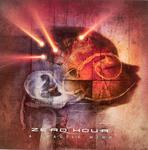

| Artist: | Zero Hour |
| Title: | A Fragile Mind |
| Label: | Sensory SR3028 |
| Length(s): | 43 minutes |
| Year(s) of release: | 2005 |
| Month of review: | [04/2006] |
| 1) | Intro | 0.06 |
| 2) | There For Me | 4.37 |
| 3) | Destiny Is Sorrow | 8.00 |
| 4) | Brain Surgery | 3.12 |
| 5) | Losing Control | 3.45 |
| 6) | Twice The Pain | 4.20 |
| 7) | Somnecrophobia | 3.09 |
| 8) | A Fragile Mind | 11.33 |
| 9) | Intrinsic | 5.23 |
Destiny Is Sorrow has vocals in the chorus that remind me of the earlier days of Metallica (when they were still good). The way of singing here is very much in the metal vein, not based on melody. There are more melodic parts though. Zero Hour is at their best when doing brutal assaults on the ears, and the contrast with melodic passages. Thus far, the brutal assaults are dominant. In this song, they alternate these with some more atmospheric passages.
We rage on with Brain Surgery. Here, variation is the reigning master, because rhythmically we are getting quite a ride. The vocals are not very melodic, but they are sung in a way that sticks in your mind. Very staccato, and oddly phrased. Losing Control has elements of a ballad, but those are only some of the vocal passages. The melody is again one that is easily remembered. In the rougher parts, this vocalist sounds a bit too progmetal for me, dramatic in a rather overdone way.
Twice The Pain even opens with acoustic guitar, played in a repetitive fashion, alternated with rhythm guitar. The vocal lines are reminiscent of the previous song. There is a certain ehm Middle-Eastern feel about many of these melodies (or is it just me).
Somnecrophobia is a song on which we get one of those typical classically inspired guitar solo's. But for the rest, this instrumental is very much in the vein of the rest of the album: plenty of rhythm variation and plenty of power.
A Fragile Mind is the epic song of the album, reaching more than eleven minutes. There is tome to build up slowly, with repetitive guitars, still softly and echoey, and thoughtful bass playing. Then the cymbals come in, but we still keep it light. Then it is time for some balladic vocals, still keeping it relatively low key and friendly (although not that interesting either). The bass has a dominant role on this song. Later, the power does set in, for some bombastic interplay.
Intrinsic is by comparison with the rest, a very melodic piece of work, with plenty of keyboards. Surprisingly, it stays that way, and as such is more of a postlude (although a lengthy one).